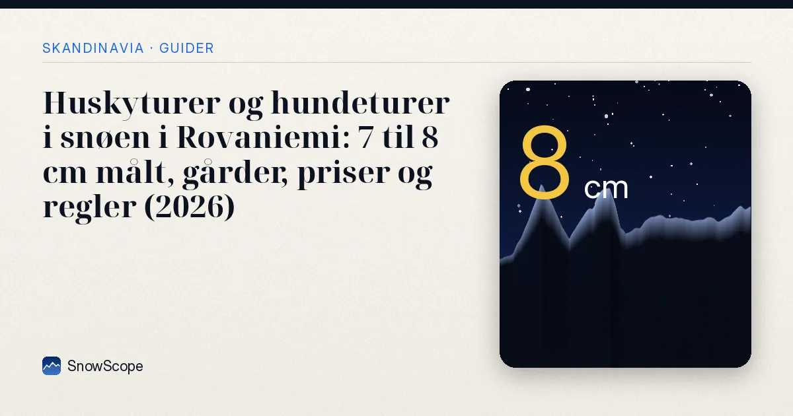

Huskyturer og hundeturer i snøen i Rovaniemi: 7 til 8 cm målt, gårder, priser og regler (2026)
Rovaniemi fikk sitt første ordentlige snøfall 13. november. Værstasjonen på flyplassen i 186 m høyde målte 7 cm, mens den lavere stasjonen på Apukka, øst for byen i 105 m, målte 8 cm. Etter bart land hele første uke i november har snødekket holdt seg tynt men stabilt, og byen åpnet sitt første vinterski-spor, 450 m langt, samme dag. For husky-gårdene som ligger langs veiene sør for byen markerer dette øyeblikket når kjerre-turer gir plass for sparkekjøring.
Se snøprognosen for Rovaniemi direkte i SnowScope-appenSnødybde, puddervarsler og 3D-kartet, gratis.

Når gårdene starter og hva de koster
Tre av Rovamiemis husky-operatører publiserer åpningsdatoer og priser åpent. Bearhill Husky kjører selvstyrte sparkekjøring fra 30. november 2026 og utover; en familie-tur på cirka 6 til 10 km, med omkring 45 minutter med å kjøre ditt eget hundespann, koster fra 196 EUR. Raitola, som også holder reinsdyr, tilbyr en guidet 5 km husky-safari fra desember til midten av april, som varer omkring en time, for 144 EUR per voksen. Arctic Circle Husky Park kjører korte besøk med 1 km kjøring for 75 EUR per voksen.
Før den offisielle sparkekjøringssesongen tilbyr mange gårder fortsatt kjerre-turer eller kortere turer der en profesjonell musher styrer spannene. Hvis du planlegger en tur i slutten av november, spør hvilken form gården vil bruke; med bare 7 til 8 cm på bakken kan noen dager fortsatt bety kjerre-turer i stedet for sparkekjøring. Tidlig-sesongsnø kan skifte med været, så bekreft noen dager før du bestiller.
Dagslyset krymper raskt ved Polarsirkelen
Rovaniemi ligger på Polarsirkelen, og dagslystimene faller bratt i november og desember. 15. november stod solen opp i 5 timer og 43 minutter. Innen 30. november kryper den over horisonten i under 4 timer. I desember stiger solen knapt i det hele tatt.
Hvis du vil se snøtildekkede landskap og skog, bestill din gård-tur for seint på formiddagen eller omkring middag. Mange av de opplyste trim-sporene rundt byen er bra for hundeturer i mørket, men de passer ikke for husky-kjøring. Ski-sporene vil være opplyste når de blir fullt åpne, men hunder er ikke tillatt på dem.
Regler for hunder i snø og skog
Finlands allemannsretten gir gjengangere stor frihet, men hunder har spesifikke regler. I bebygget område må hunder være i bånd året rundt. På landsbygda trer båndplikt inn fra 1. mars til 19. august, så akkurat nå kan hunden din løpe fri uten bånd hvis du har tillatelse til å være der. Inne i beskyttede områder som nasjonalparker må du alltid holde hunden i bånd.
Rovaniemi er reinsdyrgjeteområde. Å nærme seg reinsdyr med en hund—selv bare for et fotografi—er forbudt og kan skremme flokken. Respekter sperringer og advarselsskilt langs veiene der hjorder krysser.
Hvor du kan la hunden løpe trygt
Byen har to inngjerdede hundelekeplasser der hunden din kan leke uten bånd uten å bekymre seg for trafikk eller reinsdyr. Lainaanpuisto har nattbelysning, som er praktisk i de mørke ukene. Ounasrinne ligger i skogsomgivelser og appellerer til hunder som liker trær og skygge.
Hunder er ikke tillatt på de pløyde ski-sporene som finner rundt i regionen. Regelen gjelder også for fotgjengere: når sporene åpner fullt, hold deg unna dem så skiløperne har en klar bane. Noen av byens trim-spor er opplyste og brede nok til både hunder og vinter-fotgjengere, så bruk de i stedet.
Kle deg for minus-temperaturer
Tidlig-sesongsnø kommer ofte med kald luft, og Rovamiemis beliggenhet betyr at vintertemperaturer faller raskt og blir lave. Kort-hårete hunder kjenner kulden like mye som folk. Hvis du går med din egen hund på veier eller i byen, vurder en hundejakke for temperaturer under frysepunktet.
Salt og grus spredt på bygatene kan irritere poter. Skyll hundens pover etter en tur på saltlagt grunn, eller bruk en potevask-stasjon hvis byen installerer en. Lenger-hårete raser klarer seg bedre med kulden, men selv de trenger ly og varme når de kommer innendørs.
Tips til skiløpere
- Bestill din gård-tur noen dager i forveien og bekreft formatet: kjerre eller sparkekjøring. Med 7–8 cm på bakken kan værforandringer påvirke hvilken som brukes.
- Hvis du besøker i slutten av november, planlegg gård-besøk omkring middag når det fortsatt er dagslys for å se snø og trær.
- Bruk de to inngjerdede hundelekeplassene—Lainaanpuisto (opplyst) og Ounasrinne (skog)—for å la hunden løpe fri uten risiko for reinsdyr-hjorder eller trafikk.
- Hold din egen hund i bånd i bebygget område hele året, og nær alle reinsdyr-skilt eller sperringer. Nasjonalparker og beskyttede områder krever bånd også.
- Ta med en hundejakke for temperaturer under frysepunktet og skyll hundens pover etter å gå på saltlagt byleker.
Om tallene
Snødybdene for skistedene er det dypeste snødekket i de øvre bakkene på datoen som vises; de er anslag for et område, ikke en måling i ett punkt. Prognoser kan endre seg. Les alltid det offisielle snøskredvarselet før du kjører utenfor preparert løype.
Siter denne rapporten
For forskning, undervisning eller presse: tallene og diagrammene kan brukes fritt under CC BY 4.0 med denne kildehenvisningen.
SnowScope (2026), Huskyturer og hundeturer i snøen i Rovaniemi: 7 til 8 cm målt, gårder, priser og regler (2026), https://snowscope.app/blog/nb/2026/11/rovaniemi-husky-rides-dog-walks-snow-guide-2026.html, hentet 2026-11-14
SnowScope (Atlas Labs). (2026, November 14). Huskyturer og hundeturer i snøen i Rovaniemi: 7 til 8 cm målt, gårder, priser og regler (2026). SnowScope snow reports. https://snowscope.app/blog/nb/2026/11/rovaniemi-husky-rides-dog-walks-snow-guide-2026.html
BibTeX
@misc{snowscope2026rovaniemihuskyridesdogwa,
author = {{SnowScope (Atlas Labs)}},
title = {Huskyturer og hundeturer i snøen i Rovaniemi: 7 til 8 cm målt, gårder, priser og regler (2026)},
year = {2026},
month = nov,
howpublished = {\url{https://snowscope.app/blog/nb/2026/11/rovaniemi-husky-rides-dog-walks-snow-guide-2026.html}},
note = {Published 2026-11-14 19:39 UTC; accessed 2026-11-14}
}· CC BY 4.0 · Metoder, data og verktøy →
Følg Rovaniemi
Gratis: en melding når nysnø er på vei, og prognosen hver morgen.